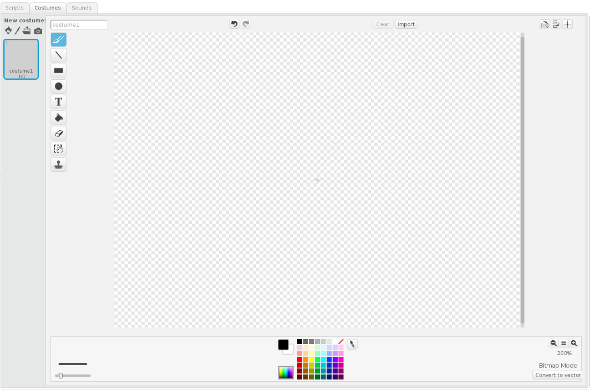
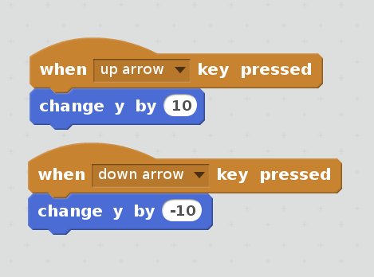
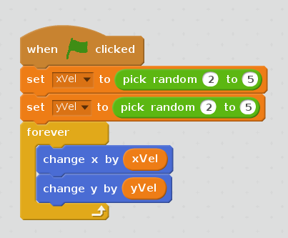
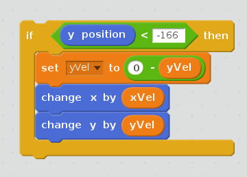
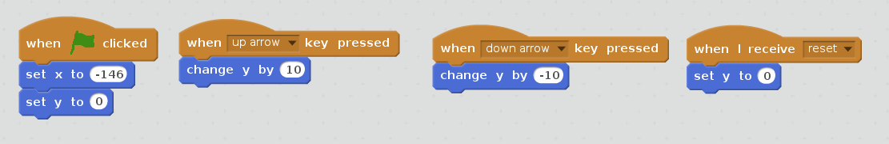
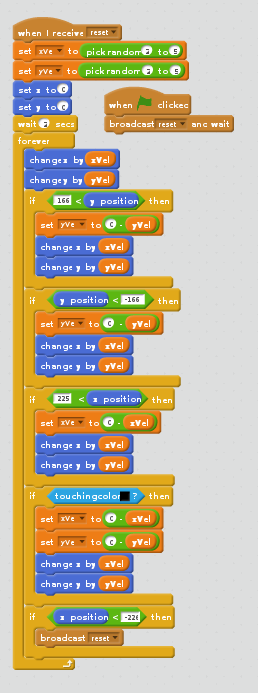

This will go step by step on how to create a basic wall bouncing game. You will be able to start a game, keep track of a high score, and move a paddle to try to bounce a ball back and forth against a wall. While it may not seem like much, a simple game like requires a decent understanding of how games work, and will teach you the fundamentals of how to get into more interesting things.
A working copy of the finished game can be found here . You can use this as a reference if you get lost, or extend this working version afterwards! The great thing about scratch is that the code for all of the games can be "remixed" into whatever you want it to be! Be sure to check out the popular scratch games and see how they work.
Begin by going to the scratch website located here. This interface provides you with everything that you need to start building a game from scratch. Start by familiarizing yourself with the interface. Look around, press different things, see what happens. Scratch provides a built in tutorial, but I'll explain the elements of Scratch as we need to use them, so you don't have to follow it.
Sprites are all of the characters and drawn objects in Scratch games. When create a new Scratch project, it will always come with a sprite of a cat. Our game isn't going to use the cat, so we need to get rid of it.
Select the cat sprite first by clicking on it in the Sprites window in the left bottom corner. It has the name "Sprite1". Once that is selected, click the "Costumes" tab in the main editing window. This is where all sprites are created and modified.
Delete the two costumes for the existing cat, by clicking the "x" box in the upper right corner of each respective costume. Once deleted you should see a blank canvas, that looks like the following:

Click the paint brush icon to enter creation mode. You then will be able to start drawing a new sprite. Select the rectangle button and draw a tall and narrow rectangle. It shouldn't be too large. Try to keep the height around 100 pixels.
After creating the rectangle outline, use the fill button to fill it with paint, and make it solid. You technically don't have to, but it looks better.
Now we have our paddle, which is just a black rectangle. But the paddle doesn't do anything, which is boring. Luckily, making it move is really easy.
Click the "Scripts" tab, right next to the "Costumes" tab to access the scripts editor. In scratch, each sprite has different scripts which are used the program the sprites. All of it is done through drag and drop! Click events, to get the event pieces, and then grab the "when space key pressed" block.
This block will perform whatever action is attached when the given key is pressed. Change it from "space" to "up arrow," so we can make this move up when we press up.
 Now go the motion events, and add a "change y by 10" block. This block will adjust the y position of the paddle by 10. That's a reasonable default for us, so attach it to our other block. Now when you press up on your keyboard, the paddle will also move up! If it goes too far up, what you may need to do is grab it with the mouse to pull it back down. Now add the pieces to make the block move down. Just grab blocks like before, but change the values so that they will perform the correct action. When finished, you should have the following two logical blocks:
Before we can do anything more interesting, we need to have a ball that the paddle can interact with. Create a new sprite, and make a square. Don't make a circle, because the edge detection for that is actually very difficult. Also give a different color than the paddle, so it's easy to see the distinction between them.
The ball should do several things. It needs to move around in a linear way, bounce around when it hits a wall, and disappear when it hit's the wall behind our paddle.
To do this, we need to start what is known as an event loop. We will pass various signals around, and then have the ball react based on those signals. To create the event loop, go to events section, and add the green flag event. This is a special flag, that basically starts when the game is run. Then under that add a forever block from the control section. What this does is create an infinite loop, that constantly checks the given conditions when the game is running
We need a way to get the ball to move around, so we have to have need to use variables to keep track of it's velocity. Go to the data blocks, and click "make a variable," call it "xVel" and say that it's only for this sprite. Do it again for another variable and name it "yVel". This will keep track of our ball's speed and direction.
 Now that we have a velocity, let's make the ball move based on that velocity. In our event loop, add two motion logical blocks. One to change x by our x velocity, and another to change y. Then add two logical right before our event loop, and after the green flag is clicked, that randomly set the x and y velocity variables. When finished, click the green flag, and the ball should start moving! Here is what my event loop looks like so far:
At this point, we can begin adding conditions in our event loop to get the ball react to the bouncing walls. When it hits the top wall or bottom wall, the y velocity should flip, so that it starts to move the other way. When it hits the right wall, the x velocity should flip. We'll save when it hits the panel and the left wall for later. Here's what the condition is for the top wall, see if you can figure out what the rest are.

So now we have a ball that will bounce around three of our four walls, but if it hits the paddle, it just goes right through it. We now will implement the logic to get paddle to do what it was destined for.
In an ordinary programming language, we would normally compare the positions of the sprite to see if we needed to bounce them, but there is a more convenient method in Scratch. We can see if it's touching another color! This is why it's important that the ball and paddle are two different colors. Go to the Sensing section, and grab a "touching color" block. You can select any color by clicking something on the screen. Create another condition, and use this new logic block to change the velocity as we did before.
One thing to note, is that you should flip both the x velocity and y velocity. The reason is that if you don't and the block touches the top of your paddle, it will ride through to the opposite of the panel, before being launched away behind it. Flipping both of the velocities will fix this behavior
Right now, if we we're to add the last wall condition to the event loop, we wouldn't have anything to add. That's because we need a way to reset the game when it finishes. To do that, we have to modify what we've created so far, and start using event broadcasting.
We've already been using a few events so far. The flag, and the movement for the paddles are examples of events created through interaction with the keyboard and world. However, we have the ability to create our own events, and react to them how we want.
What we'll do is add a "reset" event. This event will do basically set the game up back to an initial start position. All this really means given the state of our simple game is that we put the sprites back in their starting positions.
When the ball hits the left wall, it should broadcast a reset message, which will then put everything back in it's initial state. It would also be good to have it wait, so that players have some time to prepare before the ball first launches. Additionally, our flag event should just broadcast the reset message, which will go to the event loop for us. If you manage to do this, you will essentially have a working game! Here's what my logic looked like for the paddle and the ball:

You may have made the game, but there's still so much more stuff that you can add. Sounds, visual effects, score keeping, any number of things really. What you add is limited by your imagination. The ball could paint a trail as it moves around. It could move faster each time it bounces off of the paddle. There's much to be done to make the game better!
The Scratch Website has many other projects , all of which give you the ability to modify and extend their source. Some of them are kind of goofy, but others are surprisingly sophisticated. This Flappy Bird Clone is a great example of how flexible Scratch is.
Scratch is very simple, and while it's easy to get started, it can only take you so far before it's limitations will begin to show. That's why it's probably much better to learn a programming language that's capable of anything! Here's some great languages to learn as a beginner: